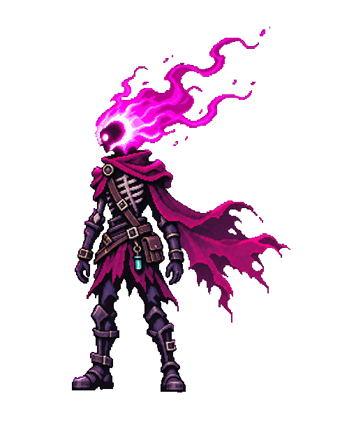

← Back to the game

The menu design adapted for gameplay.36 frames: idle, run, airborne, palm-fire, hurt, and defeat.
Airborne poses are shown in sequence here. The game selects them from vertical velocity, so the rise, apex, and fall follow the actual jump. Moving attacks combine the attack torso with the active leg pose.
Open the v2 transparent sprite sheet · Generation prompt · Previous sheet